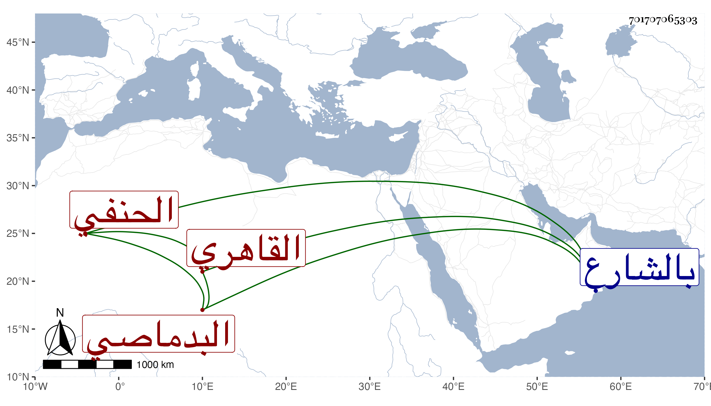

0902Sakhawi.DawLamic.ITO20230111-ara1.EIS1600.701707065303
Biography ID: 701707065303
أحمد بن سليمان بن عيسى البدماصي ثم القاهري الحنفي نزيل الإينالية بالشارع وإمامها ووالد التقي محمد الحنبلي البسطي شيخ سوق الفاضل الآتي . شيخ معمر من أهل القرآن يذكر بخير . مات وقد أضر .
